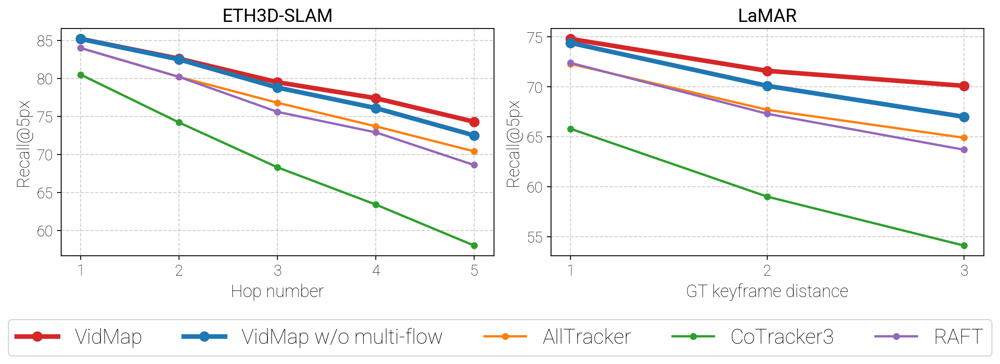
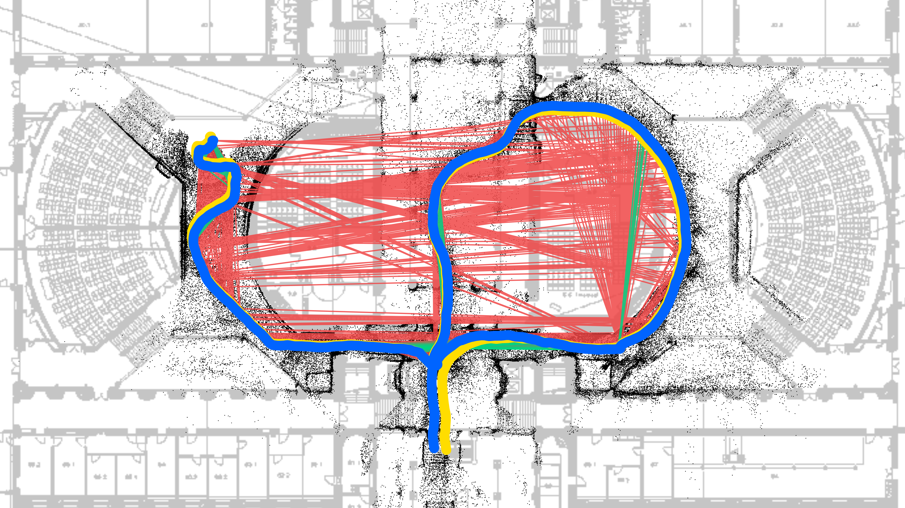
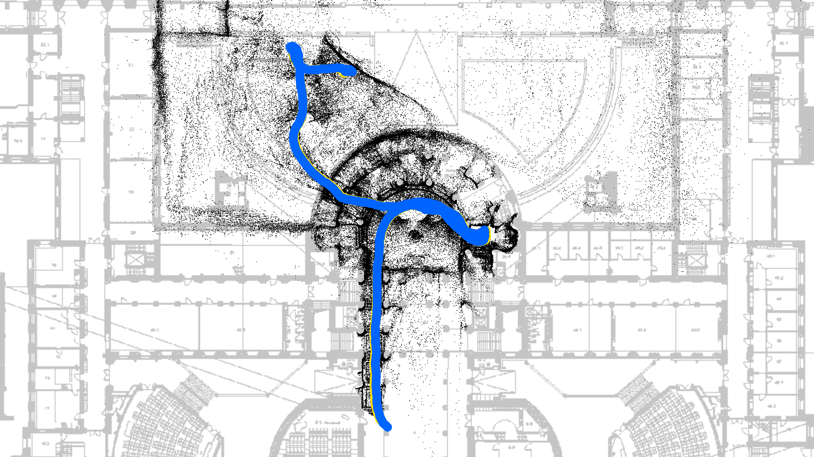
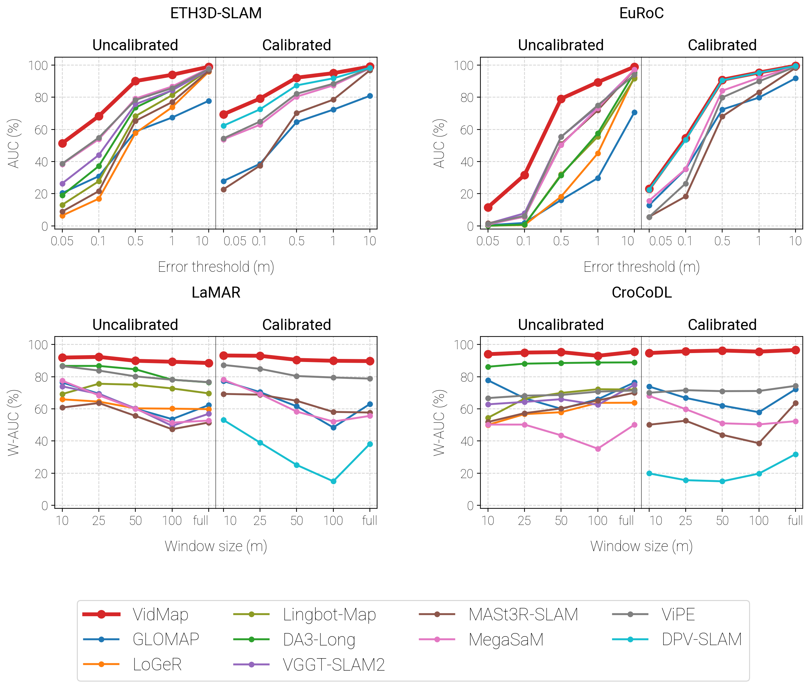

Large-scale reconstruction
VidMap’s camera poses, combined with dense triangulation, recover dense geometry along a kilometer-long route through Zurich’s old town.
Reconstructing videos from the web
From fast motion to unfamiliar environments, VidMap recovers accurate camera trajectories and 3D structure across diverse videos.
Cycling tour
Forest walk
Video game
How it works
Dense image matching propagates sparse tracks across keyframes, building long, accurate tracks. Multi-flow propagation further reduces drift by selecting reliable matches from multiple preceding keyframes.

Visually similar places can create false loop closures. Provenance-aware losses distinguish sequential tracks from loop-closure matches, preserving reliable temporal constraints while suppressing visual aliasing.

Bundle Adjustment + Filtering
VidMapGround truthOutlierInlier
Matched control with loop-closure-specific losses.
Monocular depth priors regularize global positioning, resolving geometric ambiguities and limiting scale drift when camera motion provides weak multi-view constraints.

Bundle Adjustment + Filtering
VidMapGround truth
Full VidMap reconstruction.
Accuracy across benchmarks
State-of-the-art reconstruction of long, complex sequences across diverse visual domains.

Higher is better throughout. The top row varies the allowed position error; the bottom row varies the length of trajectory being evaluated. Red denotes VidMap in these plots.
Explore VidMap
Explore the method, reproduce the experiments, or use the code on your own videos.
@article{pataki2026vidmap,
title={VidMap: Exploiting Temporal Structure for Video-Based Structure-from-Motion},
author={Pataki, Zador and Sarlin, Paul-Edouard and Pollefeys, Marc},
journal={arXiv preprint arXiv:2607.27194},
year={2026}
}